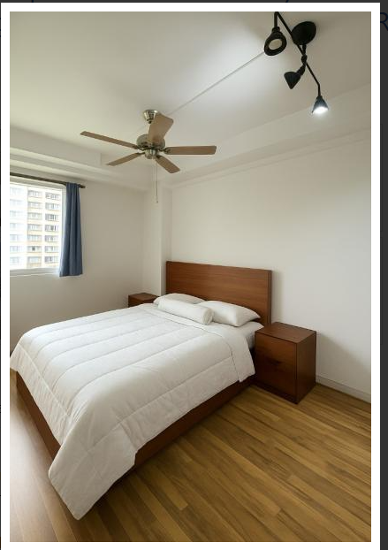
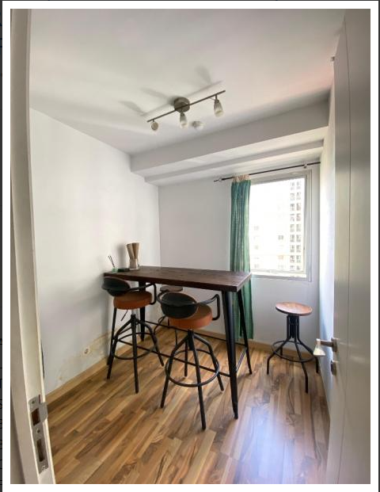
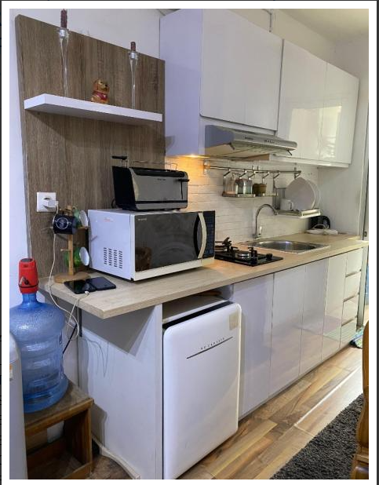
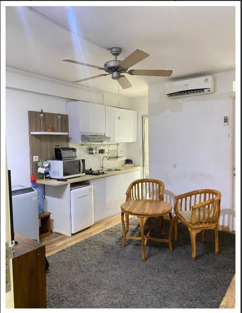
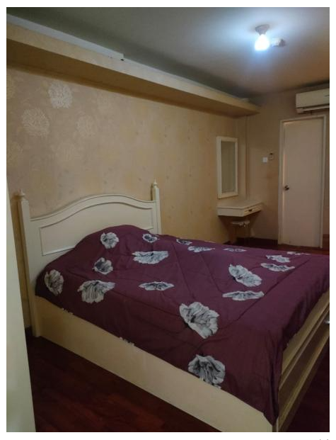
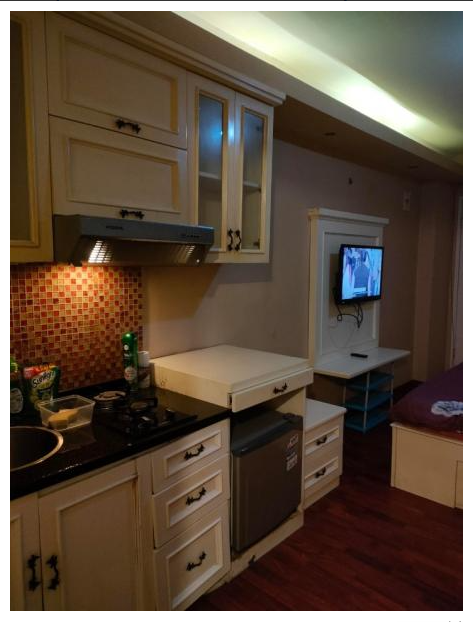

Residence / Regency · 2BR
Fully furnished
Rp24.000.000 / 6 bulan
Deposit Rp2.000.000
Residence · Regency · Green Palace · Jakarta Selatan






Catatan foto: foto promosi ini digunakan untuk menawarkan beberapa pilihan unit. Tower dan unit spesifik pada tiap foto belum dikonfirmasi. Minta foto aktual unit yang tersedia kepada pemasang sebelum survei.
Informasi pemasang mencantumkan unit studio, 2BR, dan 3BR dengan pilihan kondisi furnished, semi furnished, atau unfurnished. Rincian tarif yang tersedia saat ini:
Fully furnished
Rp24.000.000 / 6 bulan
Deposit Rp2.000.000
Furnished
Rp52.000.000 / tahun
Deposit Rp2.000.000
Furnished
Rp65.000.000 / tahun
Deposit Rp5.000.000
Furnished
Rp75.000.000 / tahun
Deposit Rp3.000.000
Furnished
Rp78.000.000 / tahun
Deposit Rp3.000.000
Tarif studio, semi furnished, dan unfurnished belum dirinci.
Hubungi pemasang untuk harga dan ketersediaan
Residence dan Regency: keamanan 24 jam, parkir, area bermain, laundry, tempat makan, coffee shop, minimarket, ATM, dan akses ke Kalibata City Square. Kawasan dekat stasiun kereta dan sekolah.
Green Palace: keamanan 24 jam, parkir, area bermain, gym, kolam renang, jogging track, lapangan tenis dan basket, ATM, laundry, tempat makan, coffee shop, minimarket, serta akses ke Kalibata City Square.
Tarif dan daftar unit mengacu pada informasi pemasang yang dipublikasikan 31 Agustus 2026. Ketersediaan, harga terbaru, ukuran, fasilitas, dan ketentuan pembayaran wajib dikonfirmasi langsung sebelum survei atau transaksi.
Sumber informasi awal: iklan pemasang di Sewa-Apartemen.net. Kalibata.city menampilkan ringkasan informasi; konfirmasikan detail langsung kepada pemasang.